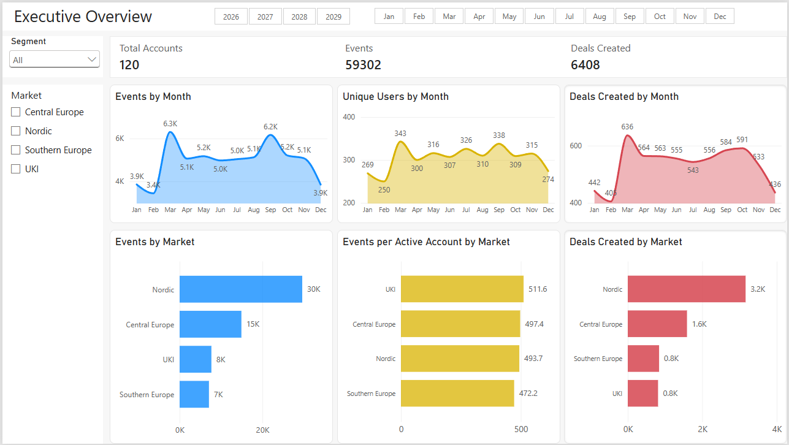
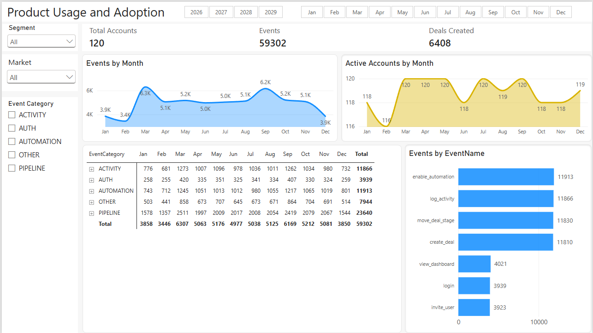
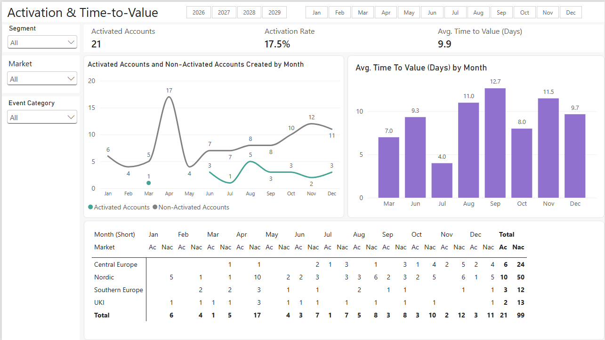
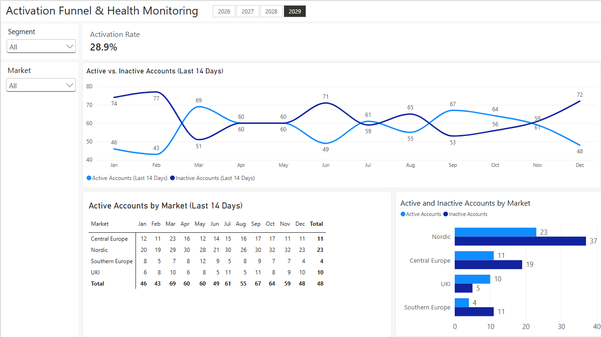

Data & Analytics
Product Analytics Lakehouse & Medallion Pipeline
At a glance
- Focus Product analytics and growth reporting for a subscription-based B2B SaaS company
- Tools DuckDB, Python, Power BI, DAX, Excel
- Data 120 accounts, 400 users, 6,443 deals, ~61,000 product events
- Deliverable A tested Bronze/Silver/Gold pipeline and an activation model, feeding a 4-page Power BI report
- Code github.com/othmaneoumnad/product-analytics-lakehouse
This project centers on NordicFlow CRM, a subscription CRM built for small and mid-sized businesses, positioned as a GDPR-first alternative to the US-based platforms most European companies default to. NordicFlow and its underlying data are both fictional. Everything past this point is real, though: a real pipeline, a real dashboard, and real decisions built on top of it.
The problem
Leadership had four questions they couldn't answer with confidence. Trial signups kept climbing, but activation was inconsistent, plenty of people created accounts without ever folding the product into their actual workflow. Plenty of users were logging in without touching the core features, pipeline management, deal progression, workflow automation, so raw login activity was getting mistaken for real engagement. Early churn was creeping up, especially among smaller accounts that weren't reaching value fast enough. And underneath all of it, different teams were pulling different numbers from different reports, so nobody could even agree on what "healthy" looked like.
The distinction I kept coming back to while building this: activity isn't the same as value. Someone logging in isn't the same as someone relying on the product to run their sales process. That distinction is what the whole pipeline and dashboard set is built around.
Data & architecture
Everything starts from five raw sources loaded into DuckDB:
| Table | Rows | What it holds |
|---|---|---|
| Accounts | 120 | Segment, industry, region, acquisition channel, trial dates |
| Users | 400 | Role, activity status, last-seen timestamps |
| Deals | 6,443 | Pipeline stage, status, amount, currency, cycle timing |
| Product events | ~61,000 | Every logged action, timestamped, tagged by platform |
| Geography | 8 countries | Region, market, and currency mapping |
I ran this through a standard Medallion structure. Bronze is a straight, untouched copy of the raw sources, just a clean landing zone. Silver is where the real work happens: standardizing text fields, deduplicating records, deriving fields like account age, deal cycle length, and user recency buckets, and filtering out test events before they could pollute anything downstream. Gold is a business-facing star schema built specifically to be BI-ready, along with a pre-aggregated events table so Power BI isn't re-querying 60,000+ raw rows every time someone opens a page.
A few decisions worth calling out
The geography source data had real problems baked in on purpose: a lowercase "de" for Germany, a duplicated France row, a missing market value for the UK. I fixed the join by trimming and standardizing the country code on both sides, so account-to-region mapping wouldn't silently fail on a casing mismatch. The duplicate France row I handled with a window function, keeping exactly one row per country before anything downstream joined against it.
The centerpiece decision was how to define "activated" in the first place. A single login is a weak signal, so I required two things to happen within 14 days of signup: a core product-usage event tied to a deal, and an actual deal being created. Activation date is whichever of those two happens later. It's a stricter bar than most trial-to-paid metrics use, but it's meant to actually mean something rather than count logins.
On the performance side, rather than have every dashboard visual hit the full event-level fact table, I built a rolled-up version grouped by date, event, category, and account. Same insight, a much lighter report to load.
Data quality got the same treatment throughout. Silver keeps every row but flags the ones that can't be trusted, such as events with no ID or no account, and gold passes on only what can be counted and attributed. Deal amounts arrive in five currencies, so silver converts them to euros before anything gets added up. Twelve automated checks run after every build, covering unique keys, valid relationships, and the activation logic.
What the data shows
Of 120 accounts, 89 showed at least one activation signal in their first 14 days, but only 21 showed both. That puts the activation rate at 17.5%.
| Stage (first 14 days) | Accounts | Share |
|---|---|---|
| Signed up | 120 | 100% |
| Showed at least one signal | 89 | 74% |
| Used the product on a deal | 60 | 50% |
| Created a deal | 50 | 42% |
| Activated (both signals) | 21 | 17.5% |
Most early engagement stalls halfway. 68 of the 89 engaged accounts either used the product on a deal or created a deal, but not both. The problem isn't getting accounts in the door; it's connecting product usage to real sales work, which points to onboarding.
Activation is slow even when it happens. Activated accounts took about 10 days on average to reach value, and 18 of 21 needed a week or more, so even the accounts that succeed use most of the 14-day window.
The Nordic market is half the business. It accounts for half of all accounts, product events, and deals, so growth and retention work has the most leverage there.
The dashboard
The Power BI report reads only the gold tables, so every figure matches the pipeline. The first three pages show the full dataset (dated 2026 to 2029). The health page shows a single year, because its 14-day activity windows need a reference date.
Executive Overview. Accounts, product events, and deals by month and market. The Nordic market leads on volume, but events per active account are similar everywhere (about 470 to 510), so its lead comes from having more customers, not from heavier use.

Product Usage and Adoption. Which features accounts use, by category and month. Pipeline actions (moving and creating deals) make up 40% of all events and log-ins under 7%, so most activity is core sales work rather than log-in-and-leave.

Activation and Time-to-Value. The activation model in the report: 21 of 120 accounts activated (17.5%), taking 9.9 days on average, split by sign-up month and market.

Activation Funnel and Health Monitoring (2029). Accounts active in the last 14 days of each month, to flag churn risk early. At the end of 2029, 48 of 120 accounts had been active in the previous two weeks and 72 had gone quiet. The activation rate on this page covers 2029 sign-ups only.
